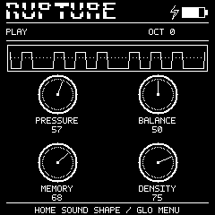

RUPTURE
240 X 240 · EXACT NATIVE C RENDERER
PLAY
FILTER
ENVELOPE
LFO
FX
REVERB
DELAY
CHORUS
OVERDRIVE
SEQUENCER
SEQ SLOTS
ARPEGGIATOR
SCALE GUIDE
KEYLOCK
PROJECTS
GLO
SETTINGS
HELP
UPDATE
FOREIGN DATA
FORMAT CONFIRM
SAFE MODE
NOTE MEMORY
MIDI
LOADING
MENU
SUB OSC 1
SUB OSC 2
COMPRESSOR
WAVEFOLDER
TRANSIENT SHAPER
TILT EQ
OCTAVE FUZZ
SANDPAPER

SIKKENWORKS · BORN OUT OF PASSION.